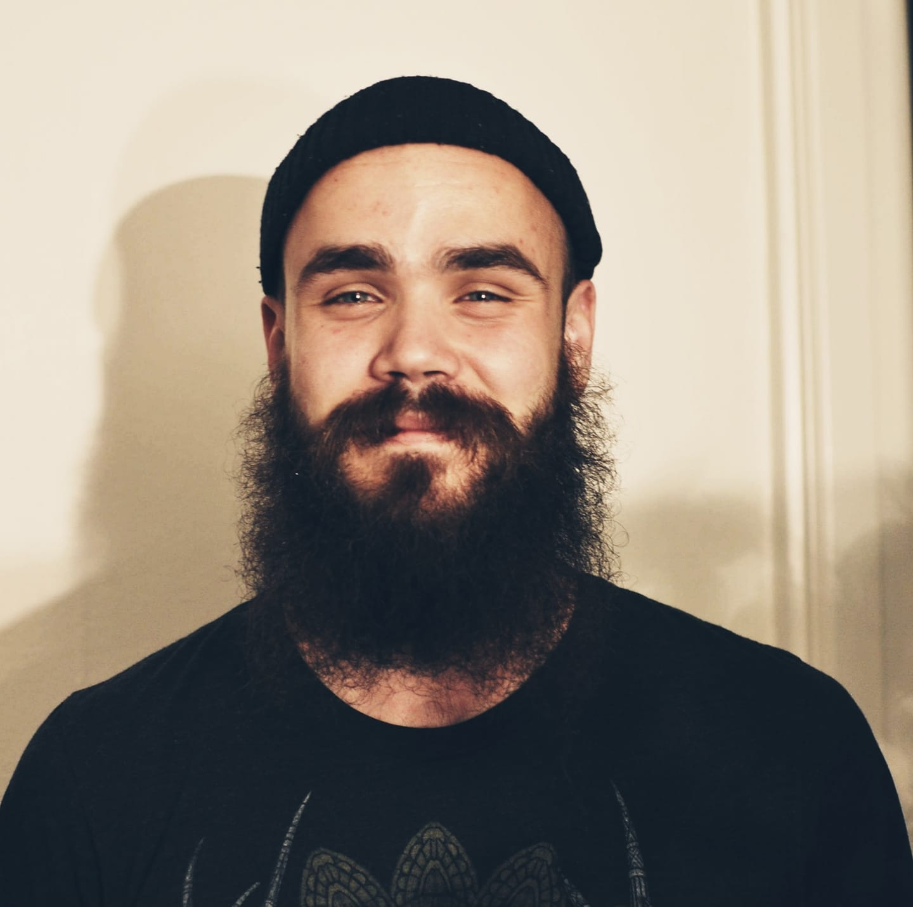

About
I work as an interaction designer in Malmö, Sweden. I work with product development, workflow management,
technical writing and prototyping with electronics and code. I love creating fun, creative and educational first time experiences
with complex products. As a designer, I always strive for every single element of a product or service to make sense, and have value. Quality over quantity, always.
I've spent most of my professional career working in the educational sector, collaborating with people around the world to provide educational experiences
within technology, from kids all the way to university. I always try to learn new tools, methods and stay on top of emerging technologies. I am currently researching and working
with Internet of Things.

karlsoderby@gmail.com
+46 76 084 5478
Outside of work
Outside of work, I run a small creative space in Malmö together with some friends. We try to lift other's ideas, host different kinds of workshops
and highlight local brands in Malmö.
As a person, I'm a nature lover, amateur guitarist and a bit of a tinkerer. I also collect old vinyl and play hockey.